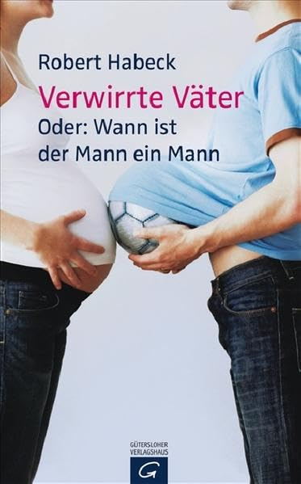
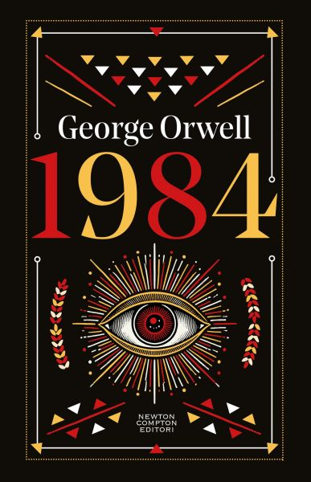

11:59 · 3 OPERE
Cultura purissima tra Made in Germany e Made in Italy!
Il filo del discorso
Il conferimento di un premio letterario a Robert Habeck apre una polemica sul rapporto fra merito culturale e potere politico. Caldarella passa dagli esempi tedeschi alle nomine e ai riconoscimenti accademici in Italia e altrove, contestando la trasformazione del prestigio istituzionale in autorità intellettuale. Il richiamo a Orwell introduce il tema della decenza e della responsabilità di chi partecipa alla comunicazione pubblica. Una citazione del Qoèlet chiude il confronto fra la voce dei saggi e il rumore del consenso.
I libri nel discorso

Verwirrte Väter. Oder: Wann ist der Mann ein Mann
Identificazione probabile
Copertina: Gütersloher Verlagshaus · 2008 · testo tedesco
Copertina autentica dell’edizione di riferimento, controllata visivamente. Non identifica l’esemplare letto o citato nel video.
Le due formule italiane corrispondono probabilmente a titolo e sottotitolo dello stesso volume tedesco.
Passaggio 6:16 ↗ · Fonti e libro ↗
1984
Copertina: Newton Compton · edizione illustrativa
Titolo e autore sono nominati nel riferimento a una prefazione.
Passaggio 6:22 ↗ · Fonti e libro ↗
Qoèlet (Ecclesiaste)
Copertina: Adelphi, Biblioteca Adelphi 414, 2001
Edizione autonoma del libro biblico, versione e commenti di Guido Ceronetti. Non è una copertina della Bibbia integrale né un’edizione confermata nel video.
L’Ecclesiaste è nominato prima del passo sulle parole dei saggi.
Passaggio 11:14 ↗ · Fonti e libro ↗Minutaggi ricavati da testi automatici, da riascoltare. Le identificazioni probabili sono segnalate accanto ai libri.